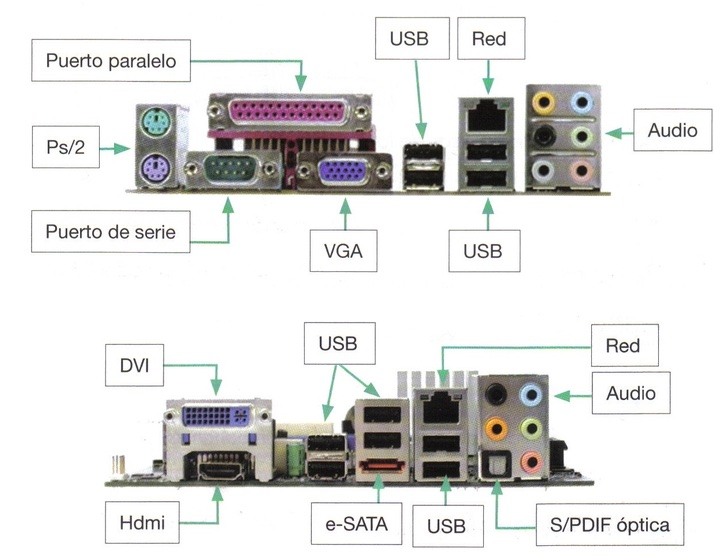

Denominamos periféricos a todos los elementos que podemos conectar a la CPU a través de sus puertos.
Los puertos son el medio para que la PC se comunique con el mundo exterior. El nombre de puertos se debe a que cumplen con una función similar a la de los puertos de los barcos, que permiten intercambiar productos con otros puertos, mientras que en los puertos de entrada y salida se posibilita la transmisión de información entre el PC y cualquier dispositivo externo.
Los puertos se clasifican según el procesamiento que se utiliza para transmitir los datos:
- Puertos paralelos: son capaces de transmitir varios bits al mismo tiempo, a través de varios conductores, uno para cada bits, conectado en paralelo (de ahí su nombre). (Ejemplo: El puerto de la impresora).
- Puertos serie: transmiten unos bits detrás de otro a través de un solo conductor es decir en serie. (Ejemplo: Los puertos USB).

Por su parte, los periféricos pueden clasificarse por la dirección en la que viaja la comunicación entre la CPU y el periférico:
- Entrada: Mediante estos periféricos introducimos información al ordenador. (Ratón, teclado, webcam y jostick).
- Salida: Son los periféricos que utiliza en ordenador para mostrarnos información. (Pantalla, impresora y altavoces).
- Entrada y salida: Son periféricos que pueden actuar en ambas direcciones. (Modem, Pendrives y otras unidades de almacenamiento externas).